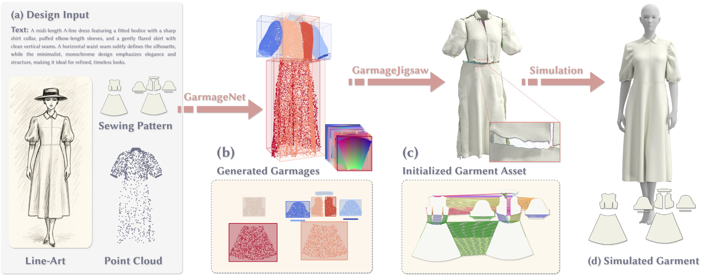
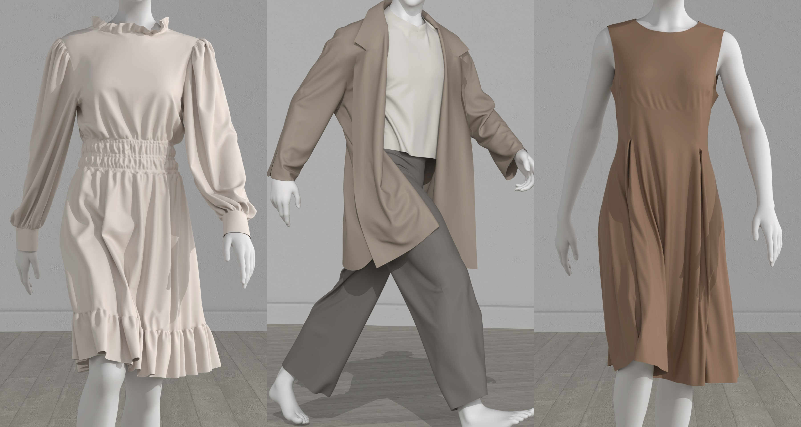
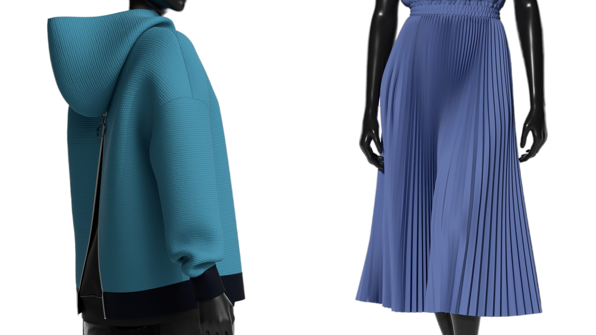
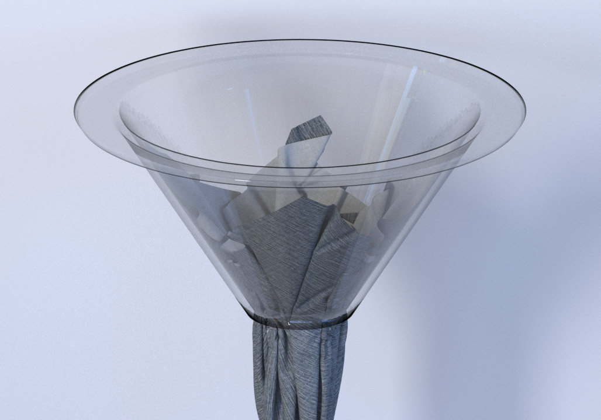
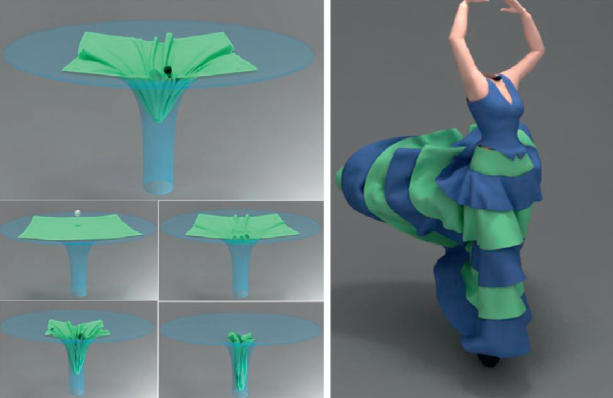
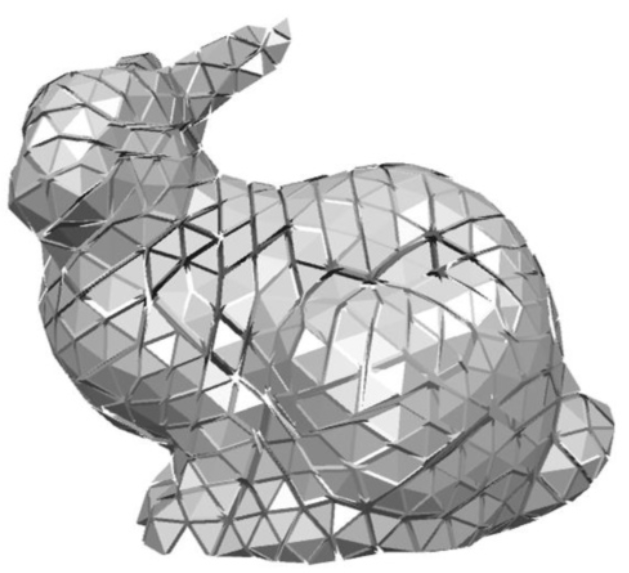
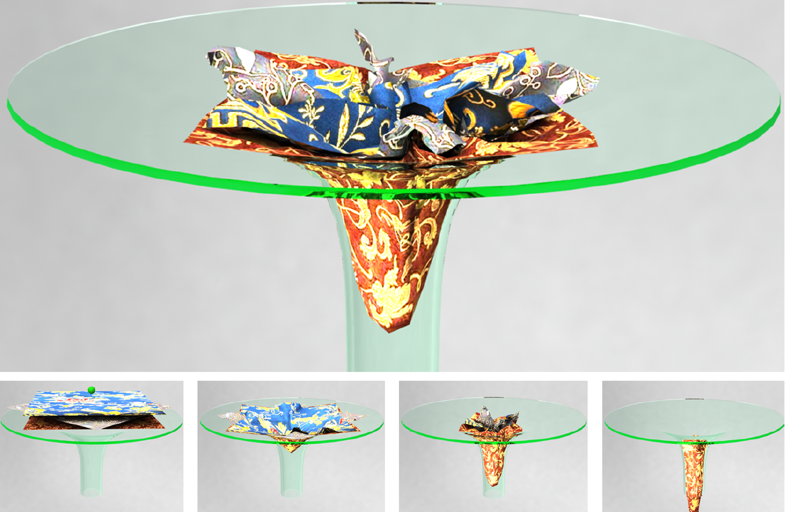
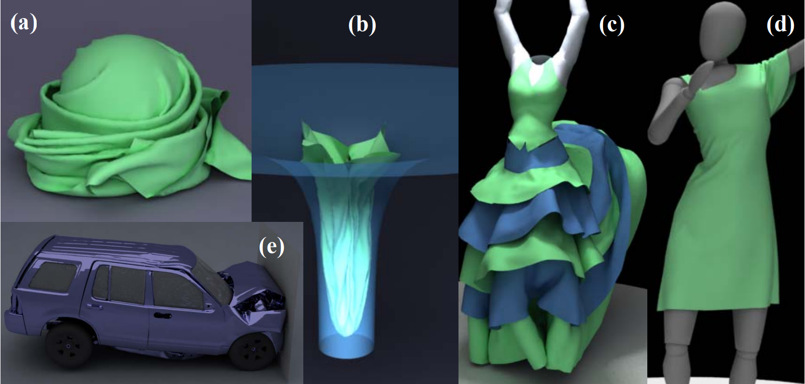

Zhendong Wang (王振东)
Email: wang.zhendong.619@gmail.com
I am currently a Senior Researcher at Style3D Research, where I manage the frontier research initiatives. From 2018 to 2024, I led the development of an advanced cloth simulation engine that now powers several products, including Style3D Studio, Style3D Fabric, Style3D MixMatch and Style3D Atelier. I received my Ph.D from Zhejiang University in December 2018 and Bachelor's degree from Wuhan University in June 2013. In January 2025, I was awarded the title of Senior Engineer. My primary research interests lie at the intersection of AI and computer graphics, including AI for 3D modling, AI for physical modeling, physics-based simulation of deformable and rigid bodies, parallel computing, and numerical optimization.
My English CV / 我的中文简历.
I am currently a Senior Researcher at Style3D Research, where I manage the frontier research initiatives. From 2018 to 2024, I led the development of an advanced cloth simulation engine that now powers several products, including Style3D Studio, Style3D Fabric, Style3D MixMatch and Style3D Atelier. I received my Ph.D from Zhejiang University in December 2018 and Bachelor's degree from Wuhan University in June 2013. In January 2025, I was awarded the title of Senior Engineer. My primary research interests lie at the intersection of AI and computer graphics, including AI for 3D modling, AI for physical modeling, physics-based simulation of deformable and rigid bodies, parallel computing, and numerical optimization.
My English CV / 我的中文简历.
We are actively seeking outstanding interns to tackle cutting-edge challenges in digital fashion industry. This is a unique oppotunities to engage with real-word industrial problems, contribute to impactful solutions, and publish your work on top conferences. If our interests align, feel free to reach out to me via email.
Education

Ph.D from Zhejiang University (2013.9--2018.12)
Thesis: Research on Physics-based Cloth Simulation.
Visiting Scholar at The Ohio State University (2017.1--2018.1)
One-year visiting scholar.
Bachelor's Degree from Wuhan University (2009.9--2013.6)
Thesis: High-quality Cloth Simulation based on Exact Collision Handling.
Teaching
2013-2015: TA for "Computer Graphics".
Publications
(hover over a project's image for a one-sentence summary)



GarmageNet: A Multimodal Generative Framework for Sewing Pattern Design and Generic Garment Modeling
arXiv 2025

Automated Task Scheduling for Cloth and Deformable Body Simulations in Heterogeneous Computing Environments
SIGGRAPH 2025.

Super-Resolution Cloth Animation with Spatial and Temporal Coherence
ACM Transactions on Graphics (SIGGRAPH 2024), vol. 43, no. 4, pp. 105:1--105:14.



Accurate self-collision detection using enhanced dual-cone method
Computer & Graphics 2018

Efficient and Robust Strain Limiting and Treatment of Simultaneous Collisions with Semedefinite Programming
Computational Visual Media 2016

TightCCD: Efficient and Robust Continuous Collision Detection using Tight Error Bounds
Computer Graphics Forum (Pacific Graphics 2015: Best Paper Award Nomination)

Fast and Exact Continuous Collision Detection with Bernstein Sign Classification
ACM SIGGRAPH Asia 2014